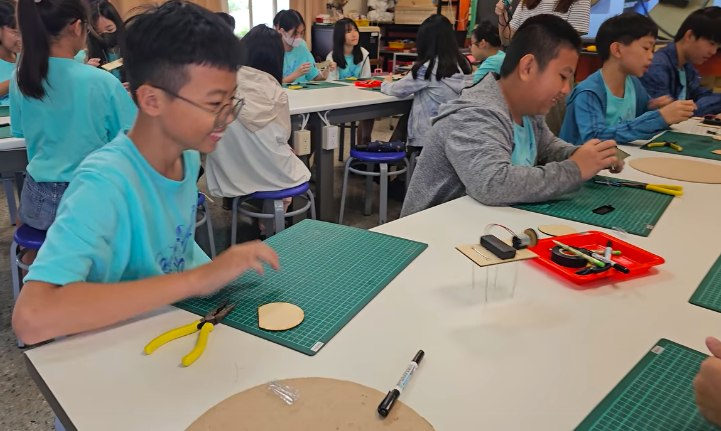

Hsinmin's Class 601 little tech makers are on the move! Today the students visited Tianwei Junior High for a technology experience. Through hands-on operation and logical thinking, the children spent a full and amazing day.
An adorable 'four-legged wobble beast' is born! In the maker spirit, students built their own four-legged wobble beasts. Watching the little contraptions they had assembled hop about on the desk was not only fun but brought a real sense of achievement.
A first taste of QUNO programming! The activity let students try programming QUNO together with an ultrasonic sensor. Becoming little engineers, they unlocked, step by step, the mysteries of computational thinking and technology in action.

Building a smart 'ultrasonic-sensing car park'! Beyond writing code, the students combined QUNO with an ultrasonic sensor to create a cool car-park system, seeing for themselves how hardware and software fit together to solve real, everyday problems.
Seeing the children's focused faces and bright smiles as they finished was wonderful. Special thanks to Class 601's homeroom teacher Yu-hsuan and IT lead Yi-jun for leading the group so warmly, and to Teachers Ya-chi, Chun-neng and Tsung-lai of the Tianwei Technology Center for such professional, lively teaching!
新民國小601科技小創客出動啦！🚀
就在今天，新民國小601班級學生到田尾國中進行科技體驗活動！ 透過動手操作與邏輯思考，孩子們度過了充實又充滿驚奇的一天！💯
🤖 超萌「四腳抖抖獸」誕生！
同學們發揮創客精神，親手做了四腳抖抖獸。 看著自己組裝的小機關在桌上活蹦亂跳，不僅有趣，更收穫滿滿的成就感！
💻 QUNO程式設計初體驗！
活動中讓學生們進行了QUNO結合超音波感測器的程式設計體驗。 孩子們化身為小小工程師，一步步解鎖運算思維與科技應用的奧秘！
🚗 智能「超音波感測停車場」實作！
除了寫程式，更將QUNO結合超音波感測器，打造出超酷的停車場系統！ 讓孩子們親眼見證硬體與軟體如何完美結合，解決日常生活中的實際問題！
看著孩子們專注的神情與完成作品時的燦爛笑容，真的是太棒了！👏 期待未來能有更多這樣「做中學」的機會，激發孩子們無限的科技潛能！💫
一場完美的活動背後，少不了一群默默付出的推手！特別感謝601班導 昱璇老師 及資訊組長 怡君老師 的熱心帶隊與細心安排；更要大聲感謝田尾科技中心的 雅琪老師、俊能老師、宗來老師 帶來如此專業、生動的教學！有您們的聯手用心，孩子們才能滿載而歸！🏆